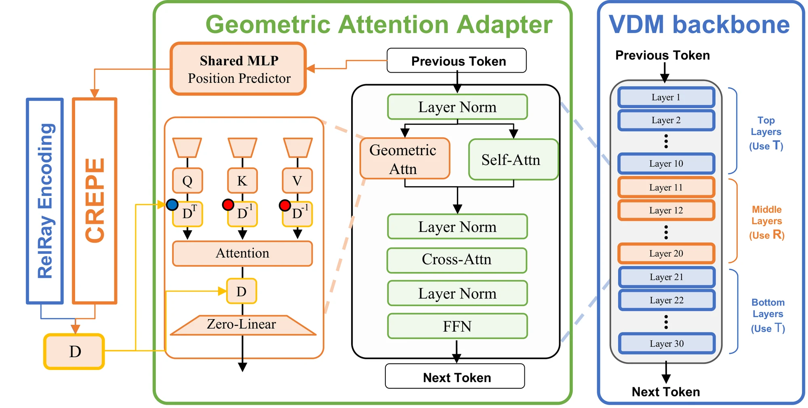

Method
Each token predicts where its content lies along its camera ray. CRePE projects that range into every other view through its lens and encodes the expected RoPE phase along the curved path.
3D view needs WebGL.
Curved ray expectation
𝔼[eiωc] = 1/(K−1) · Σk (eiωck+1 − eiωck) / (iω (ck+1 − ck))
Radial anchor
Pseudo radial distances (UniK3D) supervise one layer during training. No depth input at inference.
Radial MixForcing
Training sometimes substitutes a supplied radial map, so external maps can steer generation.
Lens showcase
Each clip is generated from a prompt, a camera trajectory and a lens. Switch to the UCPE baseline (same inputs), other seeds, or an equirectangular view that undoes the lens.
Camera control comparison
Zero-shot camera control on novel, fast camera trajectories: real camera paths of held-out RealCam-Vid clips (metric scale, pinhole lens), unseen in training. Over 30 such trajectories (38–80° turn, 6–18 m travel), CRePE's median rotation error is 12.8° versus 18.6° for UCPE. Both models get the same prompt, camera and seed; cameras are recovered from the generated videos with ViPE. Selected examples.
| Pan at end | Rot. err. | CamMC |
|---|
Internal geometry
What CRePE's radial head predicts at layer 15 while generating each clip: a positional variable inside attention, not a depth output. near far
External radial-map control
With Radial MixForcing, the same pathway accepts a radial map: generate a new video from a source video's camera and geometry, or transfer its motion. Radial map: red near, blue far.
Results
PanShot test set (340 clips). Full metrics and ablations are in the paper.
| Subset | Method | CamMC ↓ | CS-I ↑ | CS-T ↑ | k1 ↓ | k2 ↓ | Gravity ↓ | Aes. Qual. ↑ | BG Cons. ↑ |
|---|---|---|---|---|---|---|---|---|---|
| Non-pinhole | ReCamMaster | 54.56 | 98.69 | 24.60 | 0.186 | 0.154 | 11.19 | 0.5596 | 0.9484 |
| UCPE | 20.60 | 98.80 | 24.78 | 0.183 | 0.154 | 7.08 | 0.5616 | 0.9537 | |
| CRePE | 19.02 | 98.81 | 24.80 | 0.157 | 0.116 | 6.27 | 0.5639 | 0.9542 | |
| Pinhole | ReCamMaster | 57.83 | 98.65 | 25.58 | 0.179 | 0.152 | 10.98 | 0.5605 | 0.9441 |
| UCPE | 18.50 | 98.59 | 25.86 | 0.175 | 0.151 | 7.10 | 0.5619 | 0.9457 | |
| CRePE | 15.33 | 98.65 | 25.93 | 0.153 | 0.113 | 6.13 | 0.5620 | 0.9471 |
Architecture

BibTeX
@inproceedings{jin2026crepe,
title = {CRePE: Curved Ray Expectation Positional Encoding for Unified-Camera-Controlled Video Generation},
author = {Jin, Seonghyun and Kim, Youngmin and Park, Sunwoo and Ye, Jong Chul},
booktitle = {Advances in Neural Information Processing Systems (NeurIPS)},
year = {2026}
}